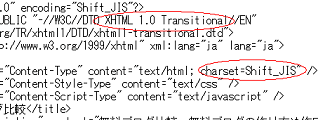
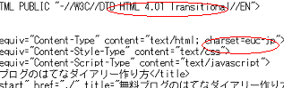

ブログサービスのhtml違いをDTD比較
ブログサービスごとに、html の記述方法や文字コードは違っていますが、それはブログの DTD によって文章の書き方定義に違いがあるからなんです。
DTD っていうのは、Document Type Definition の略で、つまりはドキュメントタイプ定義の略のことなんで、使用している無料ブログサービスがどんなドキュメントタイプを使っているかによって、いろんな書き方違いが出てきちゃうんです。
ぶっちゃけ、ブラウザでちゃんと表示されるなら、どんな DTD だろうがかまわないとは思うんですけど、やっぱブログSEOの内部要因とかで、アクセス数やブログアフィリにも影響しちゃうんで、DTD も無視できないような気もするんです。
各無料ブログサービスの DTD 比較
ブログサービスの DTD 比較をしてみると、どうも、xhtml 1.0 型ドキュメントタイプの無料ブログと html 4.01 型ドキュメントタイプのブログに分かれるようなんです。
例えば、このシーサーブログの html を見てみると、xhtml 1.0 で文章の書き方が定義されているブログになっているようで、たぶん、シーサーブログで作成すると、自動的にこの xhtml 1.0 のドキュメントタイプが指定されると思います。

html 4.01 型の方のブログサービスはというと、はてなダイアリーが html 4.01 型に当てはまるようなんですが、たいていはソースの表示で最初の方に書かれているようです。

xhtml 1.0 型の無料ブログサービス
- seesaa blog
- ジュゲムブログ
- ココログ
- Blogger
- エキサイトブログ
- 楽天ブログ（XHTML 1.1）
html 4.01 型の無料ブログサービス
- はてなダイアリー
- ＦＣ２ブログ
- ライブドアブログ
- ヤフーブログ
- 忍者ブログ
html 4.01 と xhtml 1.0 の DTD 違い
この xhtml 1.0 と html 4.01 の DTD の違いって何だろうと思うんですが、どうやら、html 4.01 っていうのは、古いバージョンの html の書き方定義のようで、xhtml 1.0 の方はわりと新らし目の html バージョンのようなんです。
xhtml 1.0 型の方がどちらかというと高性能バージョンのドキュメントタイプのようなんですが、その分、html の書き方は厳密に規定されているもようです。
たとえば、改行タグの書き方ひとつとっても、html 4.01 の古い方なら、<br>でも<BR>でもどちらでもいいようですが、xhtml 1.0 の場合だと<br />っていうふうに、絶対小文字で書かなきゃいけないんです。
しかも、半角スペースをいれてスラッシュもつけないといけないようで、なんだか面倒くさいなって思ってしまいます。
DTD 定義にかなったブログの作り方
DTD のドキュメントタイプ定義どうりなブログの作り方をした方が、やっぱブログ SEO の内的要因な面で、多少はアクセスアップになるのではないかなっていう気もします。
W3C valid チェックをした際、大量のマイナス点が発生する場合は、主にそもそもの DTD のドキュメントタイプの定義を間違っている場合が多いように思います。
html 4.01 や xhtml 1.0 の DTD にも、さらに strict な厳密定義のものや、多少ゆるやかで、ぶなんな感じの Transitional なものにわけられているので、あまりに減点されるようなら、DTD の部分を修正してみるといいと思います。
特に、検索窓を設置する場合のhtmlやアフィリエイトタグを貼り付ける場合、古いバージョンの html 4.01 型サイトを想定して html タグが作成されているものが多く、アフィリエイトサービスによっては、valid 対応の場合に限り、html タグの修正を認めている場合もあったりします。
なるべくなら、DTD の定義の部分を修正してみたり、html タグを修正してみたりして、DTD にかなったブログの作り方をした方が、W3C valid で SEO 対策にもなり、いいのではないかなって気がするんです。
- html 的に雑音のない無料ブログ比較
無料ブログの作成にあたって大切なのは、やっぱ、ごちゃごちゃしてない無料ブログサービスで作成することなんじゃないかなって気がします。 ブログのhtmlソースにいろんなのが入っていたら、ＳＥＯ的な効果も... - 無料ブログの比較と一覧
おすすめの無料ブログを比較して一覧表示にしてみたので、はじめてブログを作る際の参考になればと思います。ちなみにアカウント登録の際の無料メールアドレスの取得などはこちら。無料メールアドレスの作り方